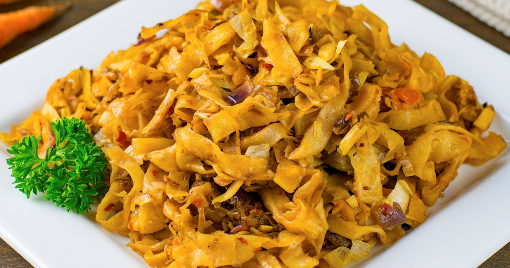

SRILANKA
COOKING RECEIPES



Welcome to the Sri Lanka
Cooking Recipes website!
Here,
you'll discover a treasure trove of culinary delights from the beautiful
island of Sri Lanka. Our website is dedicated to showcasing the rich and
diverse cuisine of Sri Lanka,
offering a wide array of authentic recipes
that highlight the flavors, spices, and traditions of this vibrant
culture.
From aromatic
curries to delectable sweets, our collection features traditional dishes
that span various regions and influences within Sri Lanka.
Whether you're a seasoned cook or just
starting your culinary journey, you'll find step-by-step instructions,
tips, and tricks to recreate these
mouthwatering recipes in your own kitchen.
Explore the site
to uncover the secrets behind beloved Sri Lankan dishes, learn about
unique ingredients, and delve into the cultural significance of each
recipe.
Whether you're looking for spicy curries,
flavorful rice dishes, crispy snacks, or delightful desserts, our
website is your gateway to
experiencing the authentic flavors of Sri
Lanka right in your home.
Join us on a culinary adventure as we
celebrate the diversity and deliciousness of Sri Lankan cuisine!
TOP 05 SRILANKAN FOODS
Kottu Rotti
Pol Sambol
Lamprais
Rice & Curry
Egg Hoppers